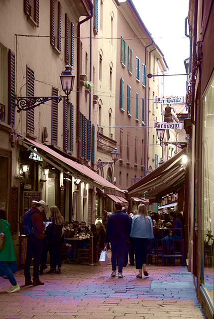
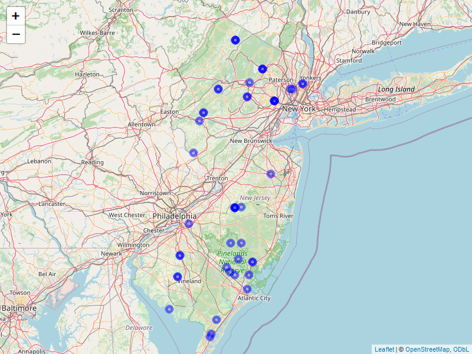
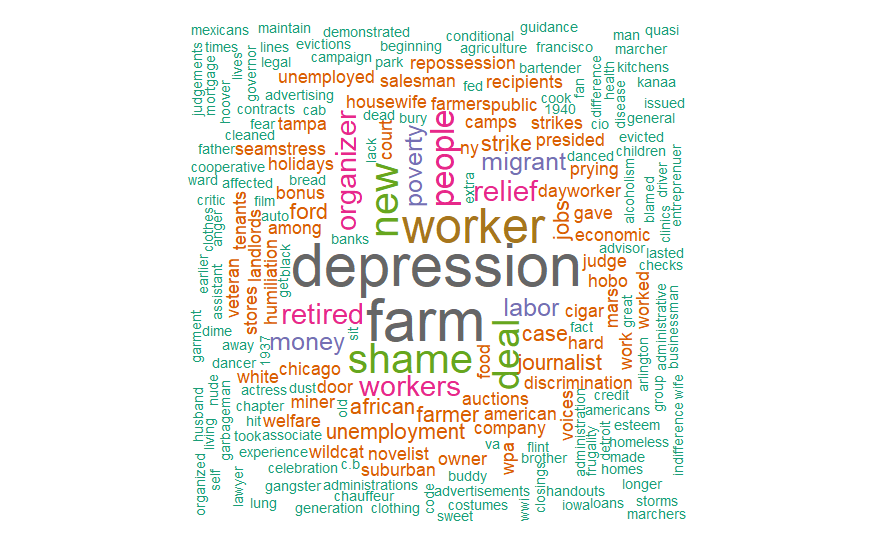

Mapping Project Title #1

Restored historical maps, built archival datasets, and visualized change using GIS mapping and automation workflows.
Restored historical maps, built archival datasets, and visualized change using GIS mapping and automation workflows.

Extracted text and imagery from archival sources, mapped them using Python and GIS tools, and created an interactive dataset.

Ricerca per l’Italia – Cultural Entities by Regions.

Visualizing Civilian Conservation Corps camps in New Jersey through mapping and archival research.

Sentiment analysis of literature using R — including *The Fall of the House of Usher* and *The Awakening*.

Web scraping and word‑cloud visualization of textual data.